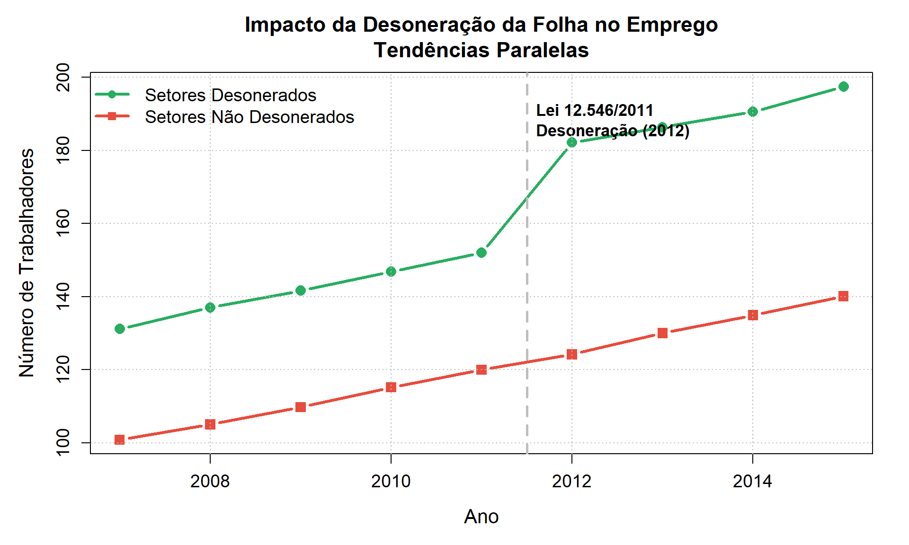
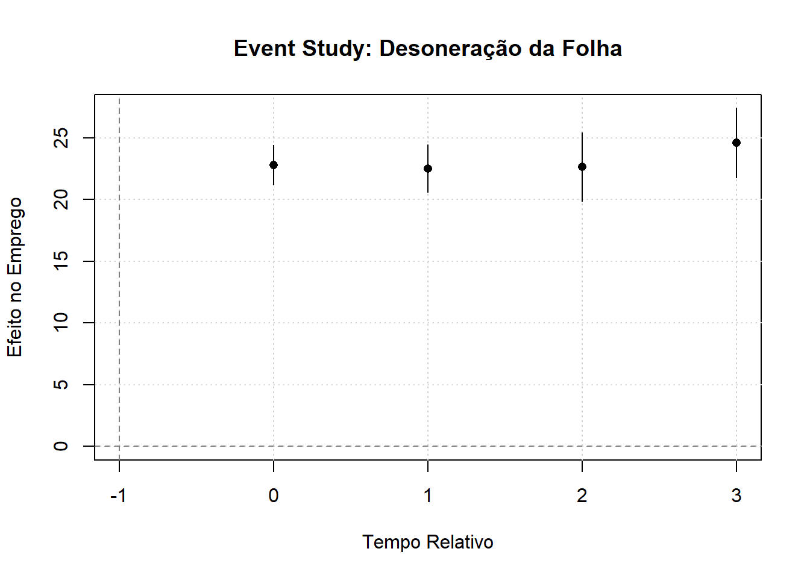

# Configurar seed para reprodutibilidade
set.seed(42)
# Parâmetros da simulação
n_empresas <- 100
n_anos <- 9 # 2007-2015
ano_inicio <- 2007
ano_desoneracao <- 2012
# Metade das empresas em setores desonerados
n_desonerado <- n_empresas / 2
# Criar data frame vazio
dados <- data.frame()
for (i in 1:n_empresas) {
# Determinar se empresa está em setor desonerado
desonerado <- ifelse(i <= n_desonerado, 1, 0)
# Efeito fixo da empresa
# Setores desonerados têm baseline maior (mais intensivos em mão de obra)
efeito_fixo <- 100 + (30 * desonerado) + rnorm(1, mean = 0, sd = 10)
for (t in 0:(n_anos - 1)) {
ano <- ano_inicio + t
# Tendência temporal comum (crescimento econômico)
tendencia_temporal <- 5 * t
# Efeito da desoneração (apenas após 2012 para setores desonerados)
efeito_desoneracao <- ifelse(desonerado == 1 & ano >= ano_desoneracao, 25, 0)
# Ruído aleatório
erro <- rnorm(1, mean = 0, sd = 5)
# Número de trabalhadores
n_trabalhadores <- efeito_fixo + tendencia_temporal + efeito_desoneracao + erro
# Criar variável post
post <- ifelse(ano >= ano_desoneracao, 1, 0)
# Criar variável de interação
desoneracao <- desonerado * post
# Adicionar linha ao data frame
dados <- rbind(dados, data.frame(
empresa_id = i,
ano = ano,
tempo = t,
desonerado = desonerado,
post = post,
desoneracao = desoneracao,
n_trabalhadores = n_trabalhadores
))
}
}Introdução
Normalmente, o pesquisador não tem acesso a dados de experimentos controlados e randomizados. Mesmo assim o infêrencial causal continua sendo de interesse. O método de diferenças em diferenças utiliza a dinamica temporal para dirimir a víes de seleção. A sua beleza reside na simplicidade com que, sob certas hipóteses, consegue isolar o efeito de um tratamento, controlando por fatores não observáveis que poderiam confundir a nossa análise.
Neste post, vamos mergulhar na intuição por trás do DiD. Começaremos com a intuição do método. Em seguida, desvendaremos como o DiD elimina o viés de seleção, qual a sua hipótese fundamental – as tendências paralelas – e como podemos testá-la visualmente através de estudos de eventos. Por fim, abordaremos uma extensão robusta, as Triplas Diferenças (DDD), e ilustraremos todos esses conceitos com dados simulados, mostrando o poder do método na prática.
A desoneração da folha de pagamentos
No início dos anos 2010, o governo brasileiro enfrentava preocupações sobre a competitividade da indústria nacional e o custo elevado da mão de obra. A contribuição previdenciária patronal de 20% sobre a folha de salários era vista como um entrave à geração de empregos, especialmente em setores intensivos em trabalho. Em resposta, o governo implementou a desoneração da folha através da Lei nº 12.546/2011, que entrou em vigor em 2012.
A política permitiu que empresas de setores específicos optassem por pagar uma contribuição sobre a receita bruta (com alíquotas variando de 1% a 4,5%) em vez dos tradicionais 20% sobre a folha.
Do ponto de vista da inferência causal, essa política criou uma situação quasi-experimental ideal para aplicação do DiD:
- Grupo de Tratamento: Empresas em setores desonerados
- Grupo de Controle: Empresas em setores não desonerados
- Período Pré-Tratamento: 2007-2011 (antes da implementação)
- Período Pós-Tratamento: 2012-2015 (após a implementação)
- Outcome de Interesse: Número de trabalhadores empregados
A Intuição do Método DiD
Por que Comparações Simples Falham?
Imagine que queremos avaliar se a desoneração aumentou o emprego. Poderíamos ser tentados a fazer duas comparações simples:
Comparação Cross-Sectional (2012-2017): Comparar o emprego médio nos setores desonerados com os não desonerados após a política. O problema? Os setores desonerados (como TI e construção civil) já eram naturalmente mais intensivos em mão de obra antes da política. Essa diferença estrutural entre os setores é o que chamamos de viés de seleção ou efeito fixo de grupo.
Comparação Temporal (Setores Desonerados): Comparar o emprego nos setores desonerados antes e depois de 2012. O problema? Entre 2008 e 2017, a economia brasileira passou por ciclos de crescimento e recessão que afetaram todos os setores. Atribuir toda a mudança à desoneração ignoraria essas tendências temporais comuns.
O DiD
O DiD combina ambas as abordagens de forma engenhosa. A primeira diferença (temporal) para cada grupo remove os efeitos fixos. A segunda diferença (entre grupos) remove as tendências temporais comuns. O que sobra é o efeito causal da política.
Vamos decompor isso com um exemplo intuitivo usando símbolos:
| Grupo | Antes (2008-2011) | Depois (2012-2017) | Diferença Temporal |
|---|---|---|---|
| Setores Desonerados | D + S | D + S + T + E | T + E |
| Setores Não Desonerados | S | S + T | T |
| Diferença entre Grupos | D | D + E | E ← DiD |
Legenda dos Efeitos:
D: Efeito fixo dos setores desonerados (ex: TI e construção são naturalmente mais intensivos em mão de obra)
S: Efeito fixo dos setores não desonerados (baseline comum)
T: Tendência temporal comum (crescimento/recessão econômica que afeta todos os setores)
E: Efeito causal da desoneração (o que queremos estimar)
Como o DiD Funciona:
- Primeira diferença temporal elimina os efeitos fixos (D e S desaparecem)
- Segunda diferença entre grupos elimina a tendência temporal comum (T desaparece)
- O que sobra é E: o efeito causal puro da desoneração
Formalmente, o estimador DiD é:
\[ DiD = [E[Y | D=1, Post] - E[Y | D=1, Pre]] - [E[Y | D=0, Post] - E[Y | D=0, Pre]] \] ## Como o DiD Elimina o Viés de Seleção do ATT
O Problema Fundamental da Inferência Causal
O que realmente queremos estimar é o Efeito Médio do Tratamento sobre os Tratados (ATT):
\[ ATT = E[Y^{1} | D=1] - E[Y^{0} | D=1] \]
Onde \(Y^{1}\) é o emprego com desoneração e \(Y^{0}\) é o emprego sem desoneração. O primeiro termo é observável (vemos o emprego nos setores desonerados após 2012). O problema é o segundo termo: o emprego contrafactual que teria ocorrido nos setores desonerados se a política não tivesse sido implementada. Esse contrafactual é, por definição, inobservável.
Como agora acompanhamos as unidades no tempo, podemos reescrever nosso ATT como:
\[ ATT = E[Y^{1} | D=1, Post] - E[Y^{0} | D=1, Post] \]
Uma vez que se \(D=1\) estamos considerando o período pós tratamento.
A Hipótese de Tendências Paralelas
O DiD resolve esse problema fazendo uma hipótese crucial: na ausência do tratamento, a trajetória do emprego nos setores desonerados teria sido a mesma que a trajetória observada nos setores não desonerados. Formalmente:
\[ E[Y^{0} | D=1, Post] - E[Y^{0} | D=1, Pre] = E[Y^{0} | D=0, Post] - E[Y^{0} | D=0, Pre=1] \]
Em palavras: a mudança no emprego para os setores controle é um bom proxy para a mudança que teria ocorrido nos setores desonerados na ausência da política. Se essa hipótese for válida, o DiD identifica perfeitamente o ATT.
Decomposição do Estimador
Podemos decompor o estimador DiD da seguinte forma: \[ DiD = ATT + [E[Y^{0}|D=1,Post] - E[Y^{0}|D=1,Pre]] - [E[Y^{0} |D=0,Post] - E[Y^{0}|D=0,Pre]] \] O segundo termo é o viés de tendências não-paralelas. Se as tendências forem paralelas (segundo termo = 0), então DiD = ATT. O método usa a tendência do grupo controle para construir o contrafactual não observado do grupo tratado.
Para entender como chegamos na decomposição acima, vamos rescrever o estimador DiD por meio dos resultados potenciais:
\[ DiD = [E[Y^{1} | D=1, Post] - E[Y^{0} | D=1, Pre]] - [E[Y^{0} | D=0, Post] - E[Y^{0} | D=0, Pre]] \] Somando e subtraindo do lado direito da equação por \([E[Y^{0} | D=1, Post]\), temos:
\[ DiD = [E[Y^{1} | D=1, Post] - E[Y^{0} | D=1, Pre]] - [E[Y^{0} | D=0, Post] - E[Y^{0} | D=0, Pre]] + ([E[Y^{0} | D=1, Post] - [E[Y^{0} | D=1, Post]) \] Rearranjando as expressões temos:
\[ DiD = [E[Y^{1} | D=1, Post] - [E[Y^{0} | D=1, Post] + [E[Y^{0} | D=1, Post] - E[Y^{0} | D=1, Pre]] - [E[Y^{0} | D=0, Post] - E[Y^{0} | D=0, Pre]] \] Em que:
- \([E[Y^{1} | D=1, Post] - [E[Y^{0} | D=1, Post]= ATT\)
- \([E[Y^{0} | D=1, Post] - E[Y^{0} | D=1, Pre]] - [E[Y^{0} | D=0, Post] - E[Y^{0} | D=0, Pre]]\) é o viés causado por tendencias não paralelas
Outras Hipóteses Necessárias
Além de tendências paralelas, o DiD requer:
- SUTVA (Stable Unit Treatment Value Assumption): O tratamento de uma empresa não afeta o resultado de outras
- Exogeneidade do Timing: A implementação em 2012 não foi antecipada de forma a alterar comportamentos pré-tratamento
- Composição Estável: A composição dos setores não muda drasticamente (ex: empresas não migram entre setores)
Do Cálculo Manual à Regressão OLS
Até agora, estimamos o DiD calculando manualmente as diferenças de médias. Mas há uma forma mais elegante e flexível: regressão por Mínimos Quadrados Ordinários (OLS). Surpreendentemente, uma regressão simples com uma interação recupera exatamente o mesmo estimador DiD.
A Especificação de Regressão
Considere o seguinte modelo de regressão linear:
\[Y_{it} = \beta_0 + \beta_1 \text{Desonerado}_i + \beta_2 \text{Post}_t + \beta_3 (\text{Desonerado}_i \times \text{Post}_t) + \varepsilon_{it}\]
Onde: - \(Y_{it}\) é o número de trabalhadores na empresa \(i\) no período \(t\) - \(\text{Desonerado}_i = 1\) se a empresa está em setor desonerado, 0 caso contrário - \(\text{Post}_t = 1\) se o período é pós-2012, 0 caso contrário - \(\text{Desonerado}_i \times \text{Post}_t\) é a interação entre tratamento e período
Interpretação dos Coeficientes: - \(\beta_0\): Emprego médio nos setores não desonerados antes de 2012 (grupo base) - \(\beta_1\): Diferença fixa entre setores desonerados e não desonerados (efeito fixo de grupo) - \(\beta_2\): Mudança temporal comum a todos os setores (tendência temporal) - \(\beta_3\): Efeito causal da desoneração (DiD/ATT)
Demonstração Matemática: \(\beta_3 = \text{DiD}\)
Vamos provar que \(\beta_3\) é exatamente igual ao estimador DiD que calculamos manualmente.
Passo 1: Valores Esperados para Cada Grupo-Período
Usando a equação de regressão, podemos calcular o valor esperado de \(Y\) para cada combinação de grupo e período:
| Grupo | Período | Desonerado | Post | Interação | \(E[Y]\) |
|---|---|---|---|---|---|
| Não Desonerado | Antes | 0 | 0 | 0 | \(\beta_0\) |
| Não Desonerado | Depois | 0 | 1 | 0 | \(\beta_0 + \beta_2\) |
| Desonerado | Antes | 1 | 0 | 0 | \(\beta_0 + \beta_1\) |
| Desonerado | Depois | 1 | 1 | 1 | \(\beta_0 + \beta_1 + \beta_2 + \beta_3\) |
Passo 2: Primeira Diferença (Temporal) para Cada Grupo
Setores Desonerados: \[\Delta_{\text{Desonerado}} = (\beta_0 + \beta_1 + \beta_2 + \beta_3) - (\beta_0 + \beta_1) = \beta_2 + \beta_3\]
Setores Não Desonerados: \[\Delta_{\text{Não Desonerado}} = (\beta_0 + \beta_2) - \beta_0 = \beta_2\]
Passo 3: Segunda Diferença (DiD)
\[\text{DiD} = \Delta_{\text{Desonerado}} - \Delta_{\text{Não Desonerado}} = (\beta_2 + \beta_3) - \beta_2 = \beta_3\]
Conclusão: O coeficiente da interação \(\beta_3\) é exatamente o estimador DiD!
Visualização da Decomposição
Podemos reorganizar a tabela acima para ver claramente como cada componente contribui:
| Grupo | Período | Valor Esperado | Decomposição |
|---|---|---|---|
| Não Desonerado | Antes | \(\beta_0\) | Baseline |
| Não Desonerado | Depois | \(\beta_0 + \beta_2\) | Baseline + Tendência |
| Desonerado | Antes | \(\beta_0 + \beta_1\) | Baseline + Efeito Fixo |
| Desonerado | Depois | \(\beta_0 + \beta_1 + \beta_2 + \beta_3\) | Baseline + Efeito Fixo + Tendência + DiD |
Note que: - \(\beta_0\) cancela em todas as diferenças - \(\beta_1\) cancela na diferença temporal - \(\beta_2\) cancela na diferença entre grupos - \(\beta_3\) sobrevive como o único termo não cancelado
Aplicação Prática com Dados Simulados
Para tornar os conceitos mais concretos, vamos simular dados de painel com 100 empresas (50 em setores desonerados, 50 em setores controle) ao longo de 9 anos (2007-2015). A desoneração é implementada em 2012 e tem um efeito verdadeiro de +25 trabalhadores.
###Regressão OLS
# Estimar modelo: Y = β0 + β1*Desonerado + β2*Post + β3*(Desonerado×Post) + ε
modelo <- lm(n_trabalhadores ~ desonerado + post + desoneracao, data = dados)Interpretação dos Coeficientes
# Extrair coeficientes
beta_0 <- coef(modelo)["(Intercept)"]
beta_1 <- coef(modelo)["desonerado"]
beta_2 <- coef(modelo)["post"]
beta_3 <- coef(modelo)["desoneracao"]
cat("\n=== INTERPRETAÇÃO DOS COEFICIENTES ===\n\n")
=== INTERPRETAÇÃO DOS COEFICIENTES ===cat(sprintf("β₀ (Intercepto): %.4f\n", beta_0))β₀ (Intercepto): 110.1420cat(" → Emprego médio nos setores não desonerados antes de 2012\n\n") → Emprego médio nos setores não desonerados antes de 2012cat(sprintf("β₁ (Desonerado): %.4f\n", beta_1))β₁ (Desonerado): 31.5908cat(" → Diferença fixa entre setores (efeito fixo de grupo)\n\n") → Diferença fixa entre setores (efeito fixo de grupo)cat(sprintf("β₂ (Post): %.4f\n", beta_2))β₂ (Post): 22.1818cat(" → Tendência temporal comum (crescimento econômico)\n\n") → Tendência temporal comum (crescimento econômico)cat(sprintf("β₃ (Desonerado × Post): %.4f ***\n", beta_3))β₃ (Desonerado × Post): 25.2538 ***cat(" → EFEITO CAUSAL DA DESONERAÇÃO (DiD/ATT)\n") → EFEITO CAUSAL DA DESONERAÇÃO (DiD/ATT)Visualização: Tendências Paralelas
# Calcular médias por ano e grupo
medias_ano <- aggregate(n_trabalhadores ~ ano + desonerado, data = dados, FUN = mean)
# Criar gráfico
par(mar = c(5, 5, 4, 2))
# Plotar setores não desonerados
plot(medias_ano$ano[medias_ano$desonerado == 0],
medias_ano$n_trabalhadores[medias_ano$desonerado == 0],
type = "b", pch = 15, col = "#e74c3c", lwd = 3, cex = 1.5,
xlab = "Ano", ylab = "Número de Trabalhadores",
main = "Impacto da Desoneração da Folha no Emprego\nTendências Paralelas",
ylim = range(medias_ano$n_trabalhadores),
cex.lab = 1.3, cex.main = 1.4, cex.axis = 1.2)
# Adicionar setores desonerados
lines(medias_ano$ano[medias_ano$desonerado == 1],
medias_ano$n_trabalhadores[medias_ano$desonerado == 1],
type = "b", pch = 16, col = "#27ae60", lwd = 3, cex = 1.5)
# Linha vertical no ano da desoneração
abline(v = ano_desoneracao - 0.5, col = "gray", lty = 2, lwd = 2.5)
# Legenda
legend("topleft",
legend = c("Setores Desonerados", "Setores Não Desonerados"),
col = c("#27ae60", "#e74c3c"),
pch = c(16, 15),
lwd = 3,
cex = 1.2,
bty = "n")
# Anotação
text(ano_desoneracao - 0.5, max(medias_ano$n_trabalhadores) * 0.95,
"Lei 12.546/2011\nDesoneração (2012)",
pos = 4, cex = 1.1, font = 2)
# Grid
grid(col = "gray", lty = "dotted")
Resultados
O gráfico acima visualiza as tendências paralelas. Note como:
- Antes de 2012: As linhas dos dois grupos são aproximadamente paralelas, validando visualmente nossa hipótese identificadora
- Após 2012: A linha dos setores desonerados se afasta para cima, capturando o efeito positivo da política
- Magnitude: O gap vertical entre as linhas após 2012 representa o efeito DiD de aproximadamente +25 trabalhadores
Tabela Resumo dos Resultados:
| Método | Estimativa | Erro Padrão | Estatística t | p-valor |
|---|---|---|---|---|
| DiD Manual | +25.25 | - | - | - |
| Regressão OLS (β₃) | +25.25 | 1.69 | 14.96 | < 0.001 |
Conclusão: A desoneração da folha aumentou o emprego em aproximadamente 25 trabalhadores nas empresas beneficiadas, controlando por tendências temporais comuns e diferenças fixas entre setores. O efeito é altamente significativo estatisticamente.
Two-Way Fixed Effects (TWFE)
Até agora, trabalhamos com o caso mais simples do DiD: dois grupos (tratado e controle) e dois períodos (antes e depois). Mas o que acontece quando temos múltiplos grupos tratados em diferentes momentos? Por exemplo, se alguns setores foram desonerados em 2012, outros em 2013, e outros nunca foram desonerados?
Nesse cenário mais realista, é comum usar o estimador Two-Way Fixed Effects (TWFE), que é simplesmente uma regressão com efeitos fixos de unidade e tempo:
\[ Y_{it} = \alpha_i + \lambda_t + \beta \cdot D_{it} + \varepsilon_{it} \]
Onde \(\alpha_i\) são efeitos fixos de unidade, \(\lambda_t\) são efeitos fixos de tempo, e \(D_{it}\) é o indicador de tratamento.
A grande questão: O que exatamente o coeficiente \(\beta\) do TWFE está estimando quando há heterogeneidade no timing do tratamento?
Goodman-Bacon (2021) provou um resultado matemático elegante e surpreendente:
O estimador TWFE é uma média ponderada de todos os possíveis estimadores DD 2×2 que podem ser construídos com os dados.
Formalmente:
\[ \hat{\beta}^{DD} = \sum_{k\neq U} s_{kU} \hat{\beta}_{kU}^{2\times2} + \sum_{k\neq U} \sum_{\ell > k} \left[ s_{k\ell}^k \hat{\beta}_{k\ell}^{2\times2,k} + s_{k\ell}^\ell \hat{\beta}_{k\ell}^{2\times2,\ell} \right] \]
Onde:
- \(\hat{\beta}_{kU}^{2\times2}\): comparação entre grupo tratado (\(k\)) vs. nunca tratado (\(U\))
- \(\hat{\beta}_{k\ell}^{2\times2,k}\): comparação usando grupo \(k\) (tratado precocemente) como tratamento e grupo \(\ell\) (tratado tardiamente) como controle
- \(\hat{\beta}_{k\ell}^{2\times2,\ell}\): comparação usando grupo \(\ell\) (tratado tardiamente) como tratamento e grupo \(k\) (já tratado) como controle
- \(s_{kU}, s_{k\ell}^k, s_{k\ell}^\ell\): pesos que somam 1
Interpretação: A decomposição tem três tipos de comparações:
- Tratados vs. Nunca tratados (\(\hat{\beta}_{kU}\)): Cada grupo tratado comparado com o grupo nunca tratado
- Tratados precoces vs. Tratados tardios (\(\hat{\beta}_{k\ell}^{k}\)): Grupos tratados precocemente usando grupos ainda não tratados como controles
- Tratados tardios vs. Tratados precoces (\(\hat{\beta}_{k\ell}^{\ell}\)): Grupos tratados tardiamente usando grupos já tratados como controles
Exemplo Numérico: Três Grupos, Seis Períodos
Nota sobre a fórmula: No caso geral do artigo de Goodman-Bacon, pode haver múltiplos grupos tratados em diferentes momentos. A fórmula completa tem somatórios duplos para capturar todas as comparações possíveis entre pares de grupos. No nosso exemplo específico, temos apenas:
- 1 grupo nunca tratado (U)
- 2 grupos tratados (K em t=3, L em t=5)
Portanto, a decomposição se simplifica para:
\[ \hat{\beta}^{DD} = s_{kU} \hat{\beta}_{kU}^{2\times2} + s_{\ell U} \hat{\beta}_{\ell U}^{2\times2} + s_{k\ell}^k \hat{\beta}_{k\ell}^{2\times2,k} + s_{k\ell}^\ell \hat{\beta}_{k\ell}^{2\times2,\ell} \]
Vamos ilustrar com dados concretos. Considere:
- Grupo U: Nunca tratado (2 unidades: U1, U2)
- Grupo K: Tratado em \(t=3\) (2 unidades: K1, K2)
- Grupo L: Tratado em \(t=5\) (2 unidades: L1, L2)
Estrutura dos Dados
Médias de \(Y_{it}\) por grupo e tempo:
| Grupo | t=1 | t=2 | t=3 | t=4 | t=5 | t=6 |
|---|---|---|---|---|---|---|
| U (Nunca) | 12.0 | 14.0 | 15.0 | 19.0 | 20.0 | 23.0 |
| K (Trat t=3) | 11.5 | 14.0 | 21.0 | 23.0 | 25.0 | 27.0 |
| L (Trat t=5) | 11.5 | 14.0 | 16.0 | 18.0 | 28.0 | 30.0 |
Indicador de Tratamento \(D_{it}\):
| Grupo | t=1 | t=2 | t=3 | t=4 | t=5 | t=6 |
|---|---|---|---|---|---|---|
| U | 0 | 0 | 0 | 0 | 0 | 0 |
| K | 0 | 0 | 1 | 1 | 1 | 1 |
| L | 0 | 0 | 0 | 0 | 1 | 1 |
Passo 1: Calcular os Estimadores DD 2×2
1.1. Grupo K vs. Grupo U
Períodos: PRE = \(\{1,2\}\), POST = \(\{3,4,5,6\}\)
Médias:
\[ \begin{aligned} \bar{Y}_{K,PRE} &= \frac{11.5 + 14.0}{2} = 12.75 \\ \bar{Y}_{K,POST} &= \frac{21.0 + 23.0 + 25.0 + 27.0}{4} = 24.0 \\ \bar{Y}_{U,PRE} &= \frac{12.0 + 14.0}{2} = 13.0 \\ \bar{Y}_{U,POST} &= \frac{15.0 + 19.0 + 20.0 + 23.0}{4} = 19.25 \end{aligned} \]
Diferenças temporais:
\[ \begin{aligned} \Delta_K &= \bar{Y}_{K,POST} - \bar{Y}_{K,PRE} = 24.0 - 12.75 = 11.25 \\ \Delta_U &= \bar{Y}_{U,POST} - \bar{Y}_{U,PRE} = 19.25 - 13.0 = 6.25 \end{aligned} \]
Estimador DD 2×2:
\[ \hat{\beta}_{kU}^{2\times2} = \Delta_K - \Delta_U = 11.25 - 6.25 = 5.0 \]
1.2. Grupo L vs. Grupo U
Períodos: PRE = \(\{1,2,3,4\}\), POST = \(\{5,6\}\)
Médias:
\[ \begin{aligned} \bar{Y}_{L,PRE} &= \frac{11.5 + 14.0 + 16.0 + 18.0}{4} = 14.875 \\ \bar{Y}_{L,POST} &= \frac{28.0 + 30.0}{2} = 29.0 \\ \bar{Y}_{U,PRE} &= \frac{12.0 + 14.0 + 15.0 + 19.0}{4} = 15.0 \\ \bar{Y}_{U,POST} &= \frac{20.0 + 23.0}{2} = 21.5 \end{aligned} \]
Estimador DD 2×2:
\[ \hat{\beta}_{\ell U}^{2\times2} = (29.0 - 14.875) - (21.5 - 15.0) = 14.125 - 6.5 = 7.625 \]
1.3. Grupo K vs. Grupo L (K como tratamento)
Períodos: PRE = \(\{1,2\}\), MID = \(\{3,4\}\)
Nesta comparação, usamos o Grupo L (ainda não tratado) como controle para o Grupo K.
Médias:
\[ \begin{aligned} \bar{Y}_{K,PRE} &= 12.75, \quad \bar{Y}_{K,MID} = \frac{21.0 + 23.0}{2} = 22.0 \\ \bar{Y}_{L,PRE} &= 12.75, \quad \bar{Y}_{L,MID} = \frac{16.0 + 18.0}{2} = 17.0 \end{aligned} \]
Estimador DD 2×2:
\[ \hat{\beta}_{k\ell}^{k} = (22.0 - 12.75) - (17.0 - 12.75) = 9.25 - 4.25 = 5.0 \]
1.4. Grupo L vs. Grupo K (L como tratamento)
Períodos: MID = \(\{3,4\}\), POST = \(\{5,6\}\)
ATENÇÃO: Nesta comparação, usamos o Grupo K já tratado como controle para o Grupo L. Isso pode ser problemático se o efeito do tratamento em K estiver evoluindo ao longo do tempo.
Médias:
\[ \begin{aligned} \bar{Y}_{L,MID} &= 17.0, \quad \bar{Y}_{L,POST} = 29.0 \\ \bar{Y}_{K,MID} &= 22.0, \quad \bar{Y}_{K,POST} = \frac{25.0 + 27.0}{2} = 26.0 \end{aligned} \]
Estimador DD 2×2:
\[ \hat{\beta}_{k\ell}^{\ell} = (29.0 - 17.0) - (26.0 - 22.0) = 12.0 - 4.0 = 8.0 \]
Resumo dos Estimadores 2×2
| Comparação | Estimador | Interpretação |
|---|---|---|
| \(\hat{\beta}_{kU}\) | 5.0 | K vs. Nunca tratado |
| \(\hat{\beta}_{\ell U}\) | 7.625 | L vs. Nunca tratado |
| \(\hat{\beta}_{k\ell}^k\) | 5.0 | K vs. L (L como controle) |
| \(\hat{\beta}_{k\ell}^\ell\) | 8.0 | L vs. K (K como controle) |
Passo 2: Calcular os Pesos
Os pesos na decomposição de Goodman-Bacon dependem de:
- Tamanho relativo dos grupos na comparação
- Variância do tratamento dentro da comparação
Fórmulas dos Pesos
Para uma comparação entre grupos \(g\) e \(h\):
\[ s_{gh} = \frac{w_{gh}}{\sum w} \]
Onde o peso não normalizado é:
\[ w_{gh} = n_{gh}^2 \cdot V_{D,gh} \]
- \(n_{gh}\): proporção da amostra na comparação
- \(V_{D,gh}\): variância do tratamento na comparação
Cálculo para Nosso Exemplo
Proporções dos grupos:
\[ n_U = n_K = n_L = \frac{2}{6} = \frac{1}{3} \]
Proporção de períodos tratados:
\[ \bar{D}_K = \frac{4}{6} = \frac{2}{3}, \quad \bar{D}_L = \frac{2}{6} = \frac{1}{3} \]
Para comparações com grupo nunca tratado:
\[ \begin{aligned} \mu_{kU} &= \frac{n_K}{n_K + n_U} = \frac{1/3}{2/3} = 0.5 \\ V_{kU} &= \mu_{kU}(1 - \mu_{kU}) \bar{D}_K (1 - \bar{D}_K) = 0.5 \times 0.5 \times \frac{2}{3} \times \frac{1}{3} = \frac{1}{18} \\ w_{kU} &= \left(\frac{2}{3}\right)^2 \times \frac{1}{18} = \frac{4}{9} \times \frac{1}{18} = \frac{1}{40.5} \end{aligned} \]
Similarmente, \(w_{\ell U} = \frac{1}{40.5}\).
Para comparações entre grupos tratados:
\[ \begin{aligned} V_{k\ell}^k &= \mu_{k\ell}(1 - \mu_{k\ell}) \frac{\bar{D}_K - \bar{D}_L}{1 - \bar{D}_L} \frac{1 - \bar{D}_K}{1 - \bar{D}_L} \\ &= 0.5 \times 0.5 \times \frac{1/3}{2/3} \times \frac{1/3}{2/3} = 0.25 \times 0.5 \times 0.5 = \frac{1}{16} \end{aligned} \]
\[ w_{k\ell}^k = \left[\left(\frac{2}{3}\right) \times \frac{2}{3}\right]^2 \times \frac{1}{16} = \left(\frac{4}{9}\right)^2 \times \frac{1}{16} = \frac{1}{81} \]
Similarmente, \(w_{k\ell}^\ell = \frac{1}{81}\).
Pesos Normalizados
\[ \sum w = \frac{1}{40.5} + \frac{1}{40.5} + \frac{1}{81} + \frac{1}{81} \approx 0.0741 \]
\[ \begin{aligned} s_{kU} &= \frac{1}{3} \approx 0.3333 \\ s_{\ell U} &= \frac{1}{3} \approx 0.3333 \\ s_{k\ell}^k &= \frac{1}{6} \approx 0.1667 \\ s_{k\ell}^\ell &= \frac{1}{6} \approx 0.1667 \end{aligned} \]
Verificação: \(\frac{1}{3} + \frac{1}{3} + \frac{1}{6} + \frac{1}{6} = 1\)
Passo 3: Decomposição de Goodman-Bacon
Agora calculamos a média ponderada dos estimadores DD 2×2:
\[ \begin{aligned} \hat{\beta}^{DD} &= s_{kU} \hat{\beta}_{kU} + s_{\ell U} \hat{\beta}_{\ell U} + s_{k\ell}^k \hat{\beta}_{k\ell}^k + s_{k\ell}^\ell \hat{\beta}_{k\ell}^\ell \\ &= \frac{1}{3} \times 5.0 + \frac{1}{3} \times 7.625 + \frac{1}{6} \times 5.0 + \frac{1}{6} \times 8.0 \\ &= 1.667 + 2.542 + 0.833 + 1.333 \\ &= 6.375 \end{aligned} \]
Tabela de Decomposição
| Comparação | Estimador | Peso | Contribuição |
|---|---|---|---|
| \(\hat{\beta}_{kU} \times s_{kU}\) | 5.000 | 0.3333 | 1.667 |
| \(\hat{\beta}_{\ell U} \times s_{\ell U}\) | 7.625 | 0.3333 | 2.542 |
| \(\hat{\beta}_{k\ell}^k \times s_{k\ell}^k\) | 5.000 | 0.1667 | 0.833 |
| \(\hat{\beta}_{k\ell}^\ell \times s_{k\ell}^\ell\) | 8.000 | 0.1667 | 1.333 |
| Total | 1.0000 | 6.375 |
Passo 4: Verificação com Regressão TWFE
Rodando a regressão:
\[ Y_{it} = \alpha_i + \lambda_t + \beta \cdot D_{it} + \varepsilon_{it} \]
Obtemos: \(\hat{\beta}^{TWFE} = 6.375\)
Os valores batem
Isso confirma o teorema de Goodman-Bacon: o estimador TWFE é exatamente a média ponderada dos estimadores DD 2×2.
Implicações Práticas
1. Interpretação do Coeficiente TWFE
O coeficiente \(\hat{\beta}^{TWFE} = 6.375\) não é simplesmente a média dos efeitos do tratamento. É uma média ponderada complexa que depende de:
- Timing do tratamento (quando cada grupo foi tratado)
- Tamanho dos grupos
- Variância do tratamento
2. O Problema das Comparações “Contaminadas”
Observe que \(\hat{\beta}_{k\ell}^\ell = 8.0\) usa o Grupo K já tratado como controle para o Grupo L.
Por que isso é problemático?
Se o efeito do tratamento no Grupo K estiver evoluindo ao longo do tempo (efeitos dinâmicos), a diferença temporal de K (\(\Delta_K = \bar{Y}_{K,POST} - \bar{Y}_{K,MID}\)) inclui:
- Tendência temporal comum (que queremos remover)
- Mudança no efeito do tratamento (que contamina a estimativa)
3. Quando o TWFE Funciona Bem
O TWFE identifica corretamente o efeito causal médio quando:
- Efeitos homogêneos: Todos os grupos têm o mesmo efeito (\(\tau_K = \tau_L\))
- Sem efeitos dinâmicos: O efeito não muda ao longo do tempo (\(\tau_{it} = \tau\))
- Tendências paralelas: Válidas para todas as comparações 2×2
4. Quando o TWFE Falha
O TWFE pode dar estimativas enviesadas quando:
- Efeitos heterogêneos: Diferentes grupos têm efeitos diferentes
- Efeitos dinâmicos: O efeito do tratamento evolui ao longo do tempo
- Pesos negativos: Em casos extremos, alguns pesos \(s\) podem ser negativos!
Soluções Alternativas
Quando há heterogeneidade no timing e nos efeitos, considere: Callaway & Sant’Anna (2021) e Wooldrigde (2021)-ETWFE
A decomposição de Goodman-Bacon revela que o estimador TWFE, aparentemente simples, esconde uma complexidade considerável quando há múltiplos grupos tratados em diferentes momentos.
Principais lições:
TWFE = média ponderada de comparações DD 2×2
Algumas comparações usam grupos já tratados como controles
Com efeitos heterogêneos ou dinâmicos, TWFE pode ser enviesado
Event Studies: Testando Tendências Paralelas e Efeitos Dinâmicos
Da Estimativa Única aos Efeitos Dinâmicos
Até agora, estimamos um único efeito médio da desoneração: +25 trabalhadores. Mas essa abordagem esconde informações importantes:
- O efeito foi imediato ou gradual?
- O efeito cresceu ou diminuiu ao longo do tempo?
- Mais importante: as tendências eram realmente paralelas antes de 2012?
O Event Study (ou estudo de eventos) responde a essas perguntas estimando um efeito separado para cada ano relativo ao tratamento.
A Especificação de Regressão do Event Study
Em vez de uma única dummy Post, criamos dummies para cada ano relativo ao tratamento:
\[Y_{it} = \alpha_i + \lambda_t + \sum_{k \neq -1} \beta_k \cdot \mathbb{1}\{\text{Tempo Relativo}_{it} = k\} \cdot D_i + \varepsilon_{it}\]
Onde: - \(\text{Tempo Relativo}_{it} = t - 2012\) (anos relativos à desoneração) - \(k \in \{-5, -4, -3, -2, -1, 0, 1, 2, 3\}\) são os anos relativos - \(\beta_k\) são os coeficientes de interesse (efeito no ano \(k\)) - Normalização: Omitimos \(k = -1\) como período de referência
Interpretação dos Parâmetros Temporais
Coeficientes Pré-Tratamento (\(\beta_k\) para \(k < 0\)):
- Capturam diferenças nas tendências antes da política
- Devem ser ≈ 0 se as tendências forem paralelas
- Se \(\beta_k \neq 0\): evidência de violação de tendências paralelas
Coeficientes Pós-Tratamento (\(\beta_k\) para \(k \geq 0\)):
- Capturam o efeito causal dinâmico da desoneração
- \(\beta_0\): efeito imediato (2012)
- \(\beta_1, \beta_2, \beta_3\): efeitos subsequentes
Por que Event Studies Testam Tendências Paralelas?
A hipótese de tendências paralelas não pode ser testada diretamente (o contrafactual é inobservável). Mas podemos fazer um teste indireto:
- Se as tendências eram paralelas antes, é plausível que continuariam paralelas na ausência do tratamento
- Se as tendências divergiam antes, não há razão para acreditar que convergiriam após 2012
- Event study revela essas tendências através dos coeficientes pré-tratamento
Teste Visual: Plotar \(\beta_k\) com intervalos de confiança e verificar se \(\beta_k \approx 0\) para \(k < 0\).
Implementação com Dados Simulados
library(tidyverse)
library(broom)
library(fixest)
# Criar variável de tempo relativo
dados <- dados %>%
mutate(tempo_relativo = ano - ano_desoneracao)modelo_event <- feols(
n_trabalhadores ~ i(tempo_relativo, desonerado, ref = -1) |
empresa_id + ano,
data = dados,
cluster = ~empresa_id # Erros padrão clusterizados
)
# Extrair resultados
resultados_event <- broom::tidy(modelo_event, conf.int = TRUE)
# Ou visualizar diretamente
iplot(modelo_event ,
main = "Event Study: Desoneração da Folha",
xlab = "Tempo Relativo",
ylab = "Efeito no Emprego")
O que o Gráfico Revela?
| Coeficiente | Notação | Interpretação |
|---|---|---|
| β₋₅ | tempo_relativo = -5 |
Diferença no emprego entre setores desonerados e não desonerados 5 anos antes da política (2007 vs 2007), controlando por FEs de empresa e tempo. |
| β₋₄ | tempo_relativo = -4 |
Diferença no emprego entre setores desonerados e não desonerados 4 anos antes da política (2008 vs 2008), controlando por FEs. |
| β₋₃ | tempo_relativo = -3 |
Diferença no emprego entre setores desonerados e não desonerados 3 anos antes da política (2009 vs 2009), controlando por FEs. |
| β₋₂ | tempo_relativo = -2 |
Diferença no emprego entre setores desonerados e não desonerados 2 anos antes da política (2010 vs 2010), controlando por FEs. |
| β₋₁ | tempo_relativo = -1 |
PERÍODO DE REFERÊNCIA (omitido) Normalizado em zero por construção (2011). |
| β₀ | tempo_relativo = 0 |
Efeito causal imediato da desoneração no ano de implementação (2012). Mudança no emprego dos setores desonerados relativa aos não desonerados, comparado com 2011. |
| β₁ | tempo_relativo = 1 |
Efeito causal 1 ano após a desoneração (2013). Acúmulo do efeito da política após 1 ano. |
| β₂ | tempo_relativo = 2 |
Efeito causal 2 anos após a desoneração (2014). Acúmulo do efeito da política após 2 anos. |
| β₃ | tempo_relativo = 3 |
Efeito causal 3 anos após a desoneração (2015). Efeito de longo prazo da política. |
Notas Importantes
Interpretação Formal dos Coeficientes:
Para qualquer tempo relativo k, o coeficiente β_k representa:
\[ \beta_k = E[Y_{it} | \text{Desonerado}_i = 1, \text{TempoRelativo}_{it} = k] - E[Y_{it} | \text{Desonerado}_i = 0, \text{TempoRelativo}_{it} = k] \]
Controlando por efeitos fixos de empresa (α_i) e efeitos fixos de tempo (λ_t).
Em palavras simples: > β_k mede a diferença no número de trabalhadores entre setores desonerados e não desonerados no período k relativo à desoneração, comparado com a diferença no período de referência (k = -1).
Condições para Identificação Causal:
- Tendências Paralelas (Pré-Tratamento):
- β₋₅, β₋₄, β₋₃, β₋₂ devem ser estatisticamente indistinguíveis de zero
- Se todos ≈ 0: forte evidência de que setores desonerados e não desonerados teriam evoluído de forma paralela na ausência da política
- Ausência de Antecipação:
- Coeficientes pré-tratamento não devem mostrar “salto” antes de 2012
- Empresas não devem ter ajustado emprego em antecipação à política
- Efeito Causal (Pós-Tratamento):
- β₀, β₁, β₂, β₃ > 0: a desoneração aumentou o emprego
- Se β₀ < β₁ < β₂: efeito crescente (ajuste gradual)
- Se β₀ ≈ β₁ ≈ β₂: efeito imediato e constante
ETWFE: tratamento Escalonada
No exemplo que acabamos de ver, todos os setores desonerados receberam o tratamento simultaneamente em 2012. Nesse caso, o TWFE tradicional funciona perfeitamente e produz estimativas não enviesadas do ATT.
Mas e se a realidade fosse mais complexa? E se a desoneração tivesse sido implementada de forma escalonada, com diferentes setores sendo desonerados em anos diferentes?
Simulando Desoneração Escalonada
Vamos modificar nossos dados para criar um cenário mais realista de tratamento escalonado (staggered treatment):
# Usar mesma estrutura de simulação, mas com tratamento escalonado
set.seed(42)
# Parâmetros (mesmos do exemplo anterior)
n_empresas <- 100
n_anos <- 9
ano_inicio <- 2007
# Criar data frame
dados_esc <- data.frame()
for (i in 1:n_empresas) {
# Dividir empresas em 3 grupos
if (i <= 33) {
# Grupo K: desonerados em 2012
coorte <- 2012
desonerado <- 1
} else if (i <= 66) {
# Grupo L: desonerados em 2014
coorte <- 2014
desonerado <- 1
} else {
# Grupo U: nunca desonerados
coorte <- 0
desonerado <- 0
}
# Efeito fixo da empresa (mesmo do exemplo anterior)
efeito_fixo <- 100 + (30 * desonerado) + rnorm(1, mean = 0, sd = 10)
for (t in 0:(n_anos - 1)) {
ano <- ano_inicio + t
# Tendência temporal comum (mesma do exemplo anterior)
tendencia_temporal <- 5 * t
# Efeito da desoneração (agora depende da coorte)
if (coorte == 2012 & ano >= 2012) {
# Grupo K: efeito de 25 trabalhadores
efeito_desoneracao <- 25
} else if (coorte == 2014 & ano >= 2014) {
# Grupo L: efeito de 20 trabalhadores (ligeiramente menor)
efeito_desoneracao <- 20
} else {
efeito_desoneracao <- 0
}
# Ruído aleatório
erro <- rnorm(1, mean = 0, sd = 5)
# Número de trabalhadores
n_trabalhadores <- efeito_fixo + tendencia_temporal + efeito_desoneracao + erro
# Criar variável de tratamento
tratado <- ifelse((coorte == 2012 & ano >= 2012) | (coorte == 2014 & ano >= 2014), 1, 0)
# Adicionar linha
dados_esc <- rbind(dados_esc, data.frame(
empresa_id = i,
ano = ano,
coorte = coorte,
tratado = tratado,
n_trabalhadores = n_trabalhadores
))
}
}
# Visualizar trajetórias
library(dplyr)
library(ggplot2)
medias_esc <- dados_esc %>%
mutate(grupo = case_when(
coorte == 2012 ~ "K (Deson. 2012)",
coorte == 2014 ~ "L (Deson. 2014)",
coorte == 0 ~ "U (Nunca)"
)) %>%
group_by(ano, grupo) %>%
summarise(n_trab_medio = mean(n_trabalhadores), .groups = "drop")
ggplot(medias_esc, aes(x = ano, y = n_trab_medio, color = grupo, group = grupo)) +
geom_line(linewidth = 1.2) +
geom_point(size = 3) +
geom_vline(xintercept = 2011.5, linetype = "dashed", color = "red", alpha = 0.5) +
geom_vline(xintercept = 2013.5, linetype = "dashed", color = "orange", alpha = 0.5) +
annotate("text", x = 2012, y = max(medias_esc$n_trab_medio),
label = "K desonerado", vjust = -0.5, color = "red", size = 3.5) +
annotate("text", x = 2014, y = max(medias_esc$n_trab_medio),
label = "L desonerado", vjust = -1.5, color = "orange", size = 3.5) +
scale_color_manual(values = c("K (Deson. 2012)" = "#27ae60",
"L (Deson. 2014)" = "#3498db",
"U (Nunca)" = "#e74c3c")) +
labs(title = "Desoneração Escalonada: Trajetórias de Emprego por Coorte",
subtitle = "Grupo K desonerado em 2012, Grupo L em 2014, Grupo U nunca desonerado",
x = "Ano", y = "Número Médio de Trabalhadores", color = "Grupo") +
theme_minimal() +
theme(legend.position = "bottom",
plot.title = element_text(face = "bold"))
O Problema do TWFE com Tratamento Escalonado
Vamos estimar o TWFE tradicional nesses dados:
library(fixest)
# TWFE tradicional
mod_twfe <- feols(n_trabalhadores ~ tratado | empresa_id + ano,
data = dados_esc,
vcov = ~empresa_id)
# Resultado
summary(mod_twfe)OLS estimation, Dep. Var.: n_trabalhadores
Observations: 900
Fixed-effects: empresa_id: 100, ano: 9
Standard-errors: Clustered (empresa_id)
Estimate Std. Error t value Pr(>|t|)
tratado 23.0884 0.656958 35.1444 < 2.2e-16 ***
---
Signif. codes: 0 '***' 0.001 '**' 0.01 '*' 0.05 '.' 0.1 ' ' 1
RMSE: 4.80258 Adj. R2: 0.969085
Within R2: 0.603727# Extrair ATT
att_twfe <- coef(mod_twfe)["tratado"]
cat(sprintf("\nATT estimado pelo TWFE: %.2f trabalhadores\n", att_twfe))
ATT estimado pelo TWFE: 23.09 trabalhadoresProblema: O coeficiente do TWFE é uma média ponderada de várias comparações DD 2×2, incluindo:
- Grupo K vs. Grupo U
- Grupo L vs. Grupo U
- Grupo K vs. Grupo L (quando L ainda não tratado)
- Grupo L vs. Grupo K (quando K já tratado) (problemático!)
A última comparação usa o Grupo K já desonerado como controle para o Grupo L. Se o efeito no Grupo K estiver evoluindo, essa comparação fica contaminada e o TWFE pode ser enviesado. Em outras palavras, se o ATT variar no tempo teremos problemas.
A Solução: ETWFE (Extended TWFE)
Wooldridge (2021, 2023) propôs saturar o modelo com todas as interações possíveis entre tratamento, coorte e tempo:
\[ Y_{it} = \alpha_i + \lambda_t + \sum_{g \neq U} \sum_{t} \beta_{gt} \cdot \mathbb{1}[G_i = g] \cdot \mathbb{1}[T = t] \cdot D_{it} + \varepsilon_{it} \]
Onde: - \(G_i\): coorte da empresa \(i\) (ano em que foi desonerada) - \(\beta_{gt}\): efeito da desoneração para coorte \(g\) no ano \(t\) - \(D_{it} = 1\) se empresa \(i\) está desonerada no ano \(t\)
Intuição: Cada coorte × ano tem seu próprio coeficiente, permitindo heterogeneidade total nos efeitos.
Estimando o ETWFE
library(etwfe)Warning: pacote 'etwfe' foi compilado no R versão 4.4.3# Estimar ETWFE
mod_etwfe <- etwfe(
fml = n_trabalhadores ~ 1, # sem controles
tvar = ano, # variável de tempo
gvar = coorte, # variável de coorte
data = dados_esc, # dataset
vcov = ~empresa_id # erros clusterizados
)
resultados_etwfe <- broom::tidy(mod_etwfe, conf.int = TRUE)
# Ver resumo
summary(mod_etwfe)OLS estimation, Dep. Var.: n_trabalhadores
Observations: 900
Fixed-effects: coorte: 3, ano: 9
Standard-errors: Clustered (empresa_id)
Estimate Std. Error t value Pr(>|t|)
.Dtreat:coorte::2012:ano::2012 25.6121 1.04419 24.5281 < 2.2e-16 ***
.Dtreat:coorte::2012:ano::2013 24.8691 1.19296 20.8465 < 2.2e-16 ***
.Dtreat:coorte::2012:ano::2014 22.6393 1.41846 15.9605 < 2.2e-16 ***
.Dtreat:coorte::2012:ano::2015 24.5765 1.44198 17.0436 < 2.2e-16 ***
.Dtreat:coorte::2014:ano::2014 19.9948 1.31612 15.1922 < 2.2e-16 ***
.Dtreat:coorte::2014:ano::2015 20.1489 1.59112 12.6634 < 2.2e-16 ***
... 10 variables were removed because of collinearity (.Dtreat:coorte::2012:ano::2008, .Dtreat:coorte::2012:ano::2009 and 8 others [full set in $collin.var])
---
Signif. codes: 0 '***' 0.001 '**' 0.01 '*' 0.05 '.' 0.1 ' ' 1
RMSE: 10.7 Adj. R2: 0.863225
Within R2: 0.238559O que aconteceu?
O etwfe() criou automaticamente todas as interações: - .Dtreat × coorte::2012 × ano::2012 - .Dtreat × coorte::2012 × ano::2013 - … (e assim por diante para todas as combinações)
Os coeficientes brutos do modelo ETWFE não são o ATT
Efeitos Marginais (ATT Interpretável)
Para obter o ATT, precisamos agregar os coeficientes brutos:
# Calcular ATT médio
att_etwfe <- emfx(mod_etwfe, type = "simple")
att_etwfe
.Dtreat Estimate Std. Error z Pr(>|z|) S 2.5 % 97.5 %
TRUE 23 0.688 33.4 <0.001 810.4 21.6 24.3
Term: .Dtreat
Type: response
Comparison: TRUE - FALSEO que é o ATT médio?
É a média ponderada de todos os efeitos \(\beta_{gt}\) para as observações tratadas:
\[ \widehat{ATT} = \frac{1}{N_{\text{tratado}}} \sum_{i: D_{it}=1} \hat{\beta}_{G_i, t} \]
Em palavras: Aumento médio no emprego causado pela desoneração, agregando: - Todas as empresas desoneradas - Em todos os anos pós-desoneração - Ponderando adequadamente cada observação
Efeitos Dinâmicos (Event Study)
O mais interessante é ver como o efeito evolui ao longo do tempo:
# Event study: efeitos por tempo relativo
emfx_event <- emfx(mod_etwfe, type = "event")
plot(emfx_event ,
main = "Event Study: Desoneração da Folha",
xlab = "Tempo Relativo",
ylab = "Efeito no Emprego")
Observe que emfx apenas relata efeitos pós-tratamento aqui. Isso ocorre porque todos os efeitos pré-tratamento foram eliminados da estimação em decorrência da configuração ETWFE. Especificamente, no padrão em que o grupo de controle é composto pelas unidades “ainda não” tratadas, todos os efeitos pré-tratamento são definidos mecanicamente como zero. Alternativamente, é possível especificar as unidades “nunca” tratadas como grupo de controle chamando etwfe(…, cgroup = “never”). Essa opção retorna efeitos pré-tratamento, embora com o possível custo de estimativas menos precisas por não utilizar todas as informações disponíveis.
Interpretação de cada linha:
event = -2: 2 anos antes da desoneração → deve ser ≈ 0 (tendências paralelas)event = -1: 1 ano antes → deve ser ≈ 0event = 0: Ano da desoneração → primeiro efeitoevent = 1: 1 ano após → efeito pode ter crescidoevent = 2: 2 anos após → efeito pode ter crescido mais
Como é calculado?
Para cada tempo relativo \(j\):
\[ \widehat{ATT}_j = \frac{1}{N_j} \sum_{i: \text{tempo relativo} = j} \hat{\beta}_{G_i, t} \]
Exemplo: event = 1 agrega: - Grupo K em 2013 (1 ano após desoneração em 2012) - Grupo L em 2015 (1 ano após desoneração em 2014)
Efeitos por Coorte
Podemos também ver o efeito para cada coorte:
# Efeitos por coorte
emfx_coorte <- emfx(mod_etwfe, type = "group")
emfx_coorte
coorte Estimate Std. Error z Pr(>|z|) S 2.5 % 97.5 %
2012 24.4 0.696 35.1 <0.001 894.9 23.1 25.8
2014 20.1 1.057 19.0 <0.001 264.7 18.0 22.1
Term: .Dtreat
Type: response
Comparison: TRUE - FALSEInterpretação:
- Coorte K (2012): ATT médio de ~25 trabalhadores
- Coorte L (2014): ATT médio de ~20 trabalhadores
Isso confirma heterogeneidade entre coortes: setores desonerados em 2012 tiveram efeito ligeiramente maior (25) do que os desonerados em 2014 (20).
Resumo: Coeficientes Brutos vs. Efeitos Marginais
| Conceito | O Que É | Interpretação | Uso |
|---|---|---|---|
| Coeficientes Brutos (\(\hat{\beta}_{gt}\)) | Parâmetros da regressão ETWFE | Efeito condicional para coorte \(g\) no tempo \(t\) | Não diretamente interpretável |
| ATT Simples | emfx(type = "simple") |
Média de todos \(\hat{\beta}_{gt}\) tratados | Efeito médio geral |
| ATT por Tempo Relativo | emfx(type = "event") |
Média de \(\hat{\beta}_{gt}\) para cada \(j\) | Event study (efeitos dinâmicos) |
| ATT por Coorte | emfx(type = "group") |
Média de \(\hat{\beta}_{gt}\) para cada coorte | Heterogeneidade entre grupos |